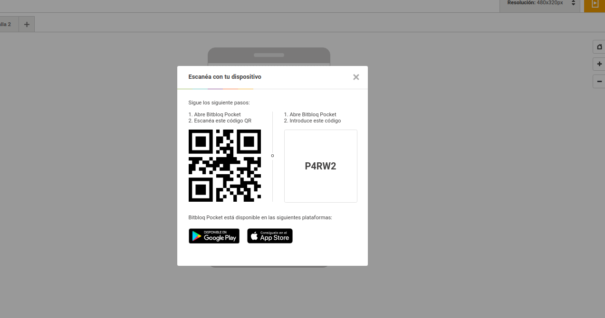
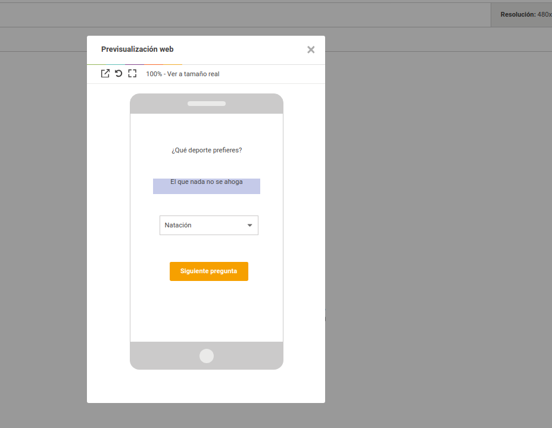

Lo primero que debemos hacer es rellenar la información del Documento (Pincha en el botón de debajo de Bloques y rellena los espacios).
Después debemos Guardar el proyecto (Pincha en Archivo/Descargar Documento).
Vamos a probar la app. Tienes tres opciones, aunque la última solo la puede llevar a cabo tu profe con su cuenta de docente. Pulsa el botón naranja de arriba a la derecha y elige una:
- Si optas por probarla en tu dispositivo móvil debes instalar primero la app Bitbloq Pocket, que encontrarás en Google Play (si usas Android) o App Store (si tienes iPhone o iPad). Una vez instalada ábrela y escanea el código QR mostrado o introduce el código.

Cualquier cambio que hagas en tu app se verá reflejado en tu móvil. Prueba...
- Lo más fácil es probarla en el Previsualizador Web. De igual forma, si eliges esta opción también podrás ver lo cambios que realices de forma instantánea.

- Por último la opción Exportar archivo instalable descargará la app en formato apk, que es un paquete de instalación. Debes hablilitar los permisos en tu dispositivo para poder llevarla a cabo. Como hemos dicho antes, solo está disponible si tienes una cuenta Docente.